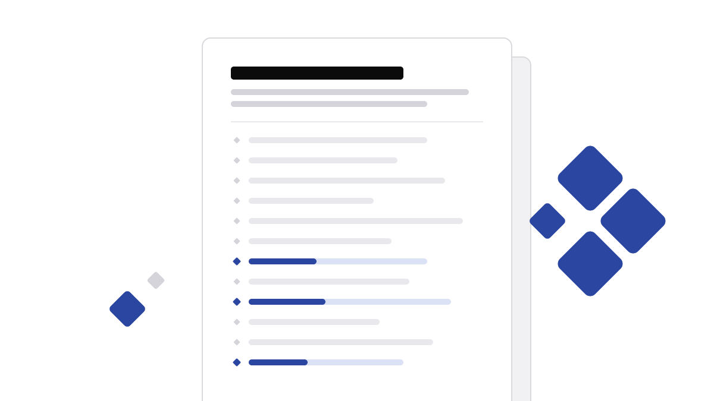

How to Write a PRD That Engineers Actually Read
Most product requirement documents get read once, in the kickoff, and never opened again. After fifteen years of writing them and watching engineers scroll past mine, I now answer twelve questions before I write a heading, keep the document to a few screens, and end it with lines a tester can check. Here is the structure, a worked example, and a template you can use today.

Why most PRDs fail
I have written well over two hundred PRDs, and for the first five years most of them were read exactly once: in the kickoff meeting, on a shared screen, while I scrolled. After that the engineers worked from the tickets, the design file and whatever they remembered me saying. The document was out of date by the second sprint, and nobody noticed, because nobody opened it.
That is not an engineering problem. It is a writing problem, and it usually has one of two causes.
It was written for approval, not for building
Many PRDs are pitch decks in prose. They open with market size, competitor screenshots and a strategy paragraph, because the first reader the author had in mind was a VP who needed convincing. By the time an engineer reaches the part they need, which is what to build and how they will know it works, they are on page four and have started skimming.
It answers questions nobody asked and skips the ones they did
The other failure is the wall of text. Every edge case the PM thought of is in there, in the order they thought of it. What is missing is the short list of decisions: what is in scope, what is not, what happens when the data is empty, who sees the error message. Engineers do not need more words. They need the decisions made, in a place they can find them.
A PRD is not a record of everything you know. It is the smallest set of decisions an engineer needs to build the right thing without having to ask you.
The twelve questions to answer first
Before I write a single heading, I answer twelve questions in plain sentences, in a scratch file. If I cannot answer one, that is the first thing I go and find out, not something I paper over in the document. Most of the PRD then writes itself from the answers.
| Number | Question | Why engineers care |
|---|---|---|
| 1 | What problem are we solving, in one sentence? | It is the test for every later trade-off. |
| 2 | Who has this problem, and how often? | It tells them which paths are busy and which are rare. |
| 3 | What do they do today instead? | The workaround is the real competitor, and often half the spec. |
| 4 | What evidence do we have? | It separates a known need from a guess. |
| 5 | What does success look like, and how will we measure it? | It decides what has to be logged from day one. |
| 6 | What is in scope for this release? | It is the list they will estimate against. |
| 7 | What is explicitly out of scope? | It stops quiet scope creep in code review. |
| 8 | What are the main flows, step by step? | It is the skeleton for tickets and tests. |
| 9 | What happens when things go wrong or are empty? | Error, empty and loading states are where estimates break. |
| 10 | What are the constraints? | Deadlines, platforms, legal review and performance budgets. |
| 11 | What are the acceptance lines? | It is the definition of done a tester can check. |
| 12 | What is still open, and who decides? | It shows them where not to build yet. |
Questions 7, 9 and 12 do most of the work. They are the ones skipped most often, and they are the ones engineers ask about in the ticket thread three weeks later, when changing course costs real time.
The structure that works
Once the answers exist, the document has six parts, always in the same order. Keeping the order fixed matters more than the headings themselves: an engineer who has read one of my PRDs knows where to look in the next one.
One screen for the why
Problem, users and evidence fit on one screen, or they are not finished. This is the part leadership reads, and it is also the part engineers need to judge edge cases on their own. If the why takes three pages, the team cannot hold it in their heads, and they stop using it to make the small calls that never reach a meeting.
Scope as a list, not a story
In scope and out of scope are two short lists, side by side if the tool allows it. Each line is short enough to become a ticket title. Out of scope gets as much care as in scope, because it is the list that protects the estimate.
Flows come next, written as numbered steps with the system's response on each step, then acceptance lines, then open questions. That is the whole document. For a mid-sized feature it runs three to five screens.
A worked example
Here is a short excerpt from a real PRD, with the product details changed. The feature let analysts in a B2B reporting tool save a set of filters and reuse it. The first draft was eleven pages. This version is four screens, and it is the one the team built from.
Saved filters, v1 (excerpt)
- Problem
- Analysts rebuild the same five to eight filters every Monday before the weekly review. It is the most common "how do I" ticket in the reporting area.
- In scope
- Save the current filters under a name.
- Apply a saved filter from the filter bar.
- Rename and delete your own saved filters.
- Out of scope
- Sharing saved filters with teammates (v2).
- Scheduled reports.
- Filters on dashboards.
- Empty state
- A user with no saved filters sees "Save the filters you use most" and the Save button, nothing else.
- Acceptance
- Given a user has applied three filters, when they choose Save and enter a name, then the name appears in the saved list, and applying it restores all three filters exactly.
Every PRD I write opens with a few lines of front matter, so the team's tracker can read the status, the owner and the decision date without anyone opening the document:
{
"title": "Saved filters, v1",
"owner": "[Author Name]",
"status": "In review",
"version": 3,
"decisionBy": "2026-10-23",
"openQuestions": 2,
"links": {
"brief": "https://wiki.example.com/briefs/saved-filters",
"design": "https://design.example.com/files/saved-filters"
}
}Notice what is not in the excerpt: no market sizing, no persona poster, no competitor screenshot. Those existed, in a separate one-page brief for leadership, and the PRD links to it in one line.
The grid is the reason the order works. Engineers and QA read the bottom half closely and the top half once. Leadership reads the top half and the open questions and skims the rest.
Acceptance lines and open questions
Write acceptance lines a tester can check
An acceptance line describes something a person can observe, in a given state, after an action. "Saved filters should be easy to use" is a wish. "Applying a saved filter restores every filter exactly as saved, including date ranges" is a line someone can test. I use Given, When, Then when the starting state matters and a plain sentence when it does not. I aim for five to twelve lines per feature; more than that usually means the feature should be split.
Success measures get the same treatment. For saved filters the measure was a query the analytics team could run from the first day of the release, written into the PRD next to the acceptance lines:
-- weekly share of active analysts who applied a saved filter
SELECT date_trunc('week', e.created_at) AS week,
COUNT(DISTINCT e.user_id) FILTER (WHERE e.name = 'saved_filter_applied') * 100.0
/ COUNT(DISTINCT e.user_id) AS pct_using_saved_filters
FROM events e
WHERE e.created_at >= '2026-01-01'
AND e.role = 'analyst'
GROUP BY 1
ORDER BY 1;Keep open questions in the open
Every PRD I write ends with a short table of open questions, each with an owner and a date. After the scope lists it is the most-read part, because it tells engineers where not to build yet. Hiding an open question in a paragraph does not close it. It moves the discussion to a pull request, where it costs more.
Anything nobody has decided yet is marked TBD in the body, never guessed. Before a review I count what is still open across every PRD in the repository:
# list every TBD left in the PRDs, with file and line, then count them
grep -rn "TBD" docs/prd/ | sort | tee open-items.txt | wc -lWhat to leave out
The fastest way to get a PRD read is to make it shorter. These are the things I take out, or move somewhere else and link:
- Market research and competitor reviews. They belong in the brief that got the project approved.
- Screen detail the designer owns. Link the design file; do not describe the screens in prose.
- Implementation choices. Say what must be true, not how to build it. The engineers will pick a better approach than the one you would have written.
- History. How the idea came up, who asked for it, the three earlier attempts. One line, if any.
- Every edge case at the same weight. Name the ones that change the estimate and leave the rest to the team and the acceptance lines.
What remains is short, a little plain, and used every day of the build. That is the only measure of a PRD that matters.
Get the PRD template
Three ways to use this structure. All free, no sign-up.
Blank template
The six parts and the twelve questions, ready to fill in. Works in Word and Google Docs.
Also as Markdown.
Worked example
The full saved-filters PRD from this article, with the answers to the twelve questions that produced it.
PRD interview
Paste this into ChatGPT or Claude. It interviews you for about 10 minutes, then drafts your PRD. You review it.
It drafts. You decide. Anything you didn't tell it is marked TBD, not made up. Already have a draft? Paste it instead and the same text checks it against the twelve questions.
Before you paste
- Use only the assistant your employer approves. If it allows none, use the blank template instead.
- Swap customer names, revenue figures, unreleased product names and personal data for placeholders such as [Customer A] and [$X].
- Turn off chat history or training where your assistant allows it.